Published: 2023-04-08
Source link: https://www.cnphotos.net/academy/show-124.html
Landscape photography is one of the first types many learners take up. From mountains to forests to the sea, nature is sometimes too beautiful to escape our cameras. But sometimes we take a photo and feel lost with the result. We think, how can something look so amazing yet so flat in the lens? Today we share some tips here to help your landscape photos look less flat.
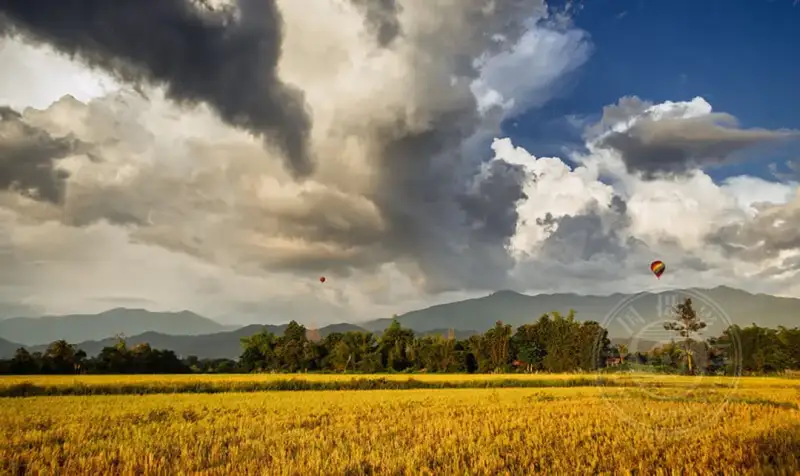
▲ Landscape ©Ahmad Syukaery
Landscape composition tips
Great landscape photography needs more than the right lens or settings. In fact, the key to amazing landscapes may be composition. A landscape photo can have sharp detail and ideal light, but it still fails with poor composition.
Luckily, landscape composition is simple. A standard landscape photo has three lines: the horizon, the foreground, and the subject area. To make your landscape more beautiful, balance these lines.
To balance these lines, try the following composition rules.
1. Use the rule of thirds
The first and most basic rule is the rule of thirds. Split your frame into three vertical and three horizontal rows to make a grid. Then place the focus of the photo at an intersection. This balances the scene and guides the viewer to the focal point.
For landscapes, avoid placing the subject in a dead corner of the grid. Instead, balance it with other elements to show the full beauty of the scene.
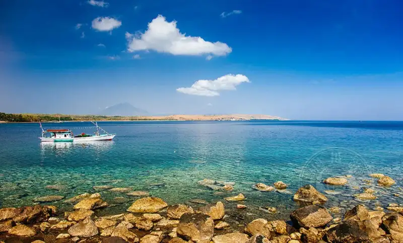
▲ Lewotolok Beach, Lembata ©Ahmad Syukaery
2. Use a frame in your work
Another way to build a landscape is to use elements of the scene to frame the subject. Think of landscape artists who use rocks and tree branches to frame the view. The same effect works in landscape photography.
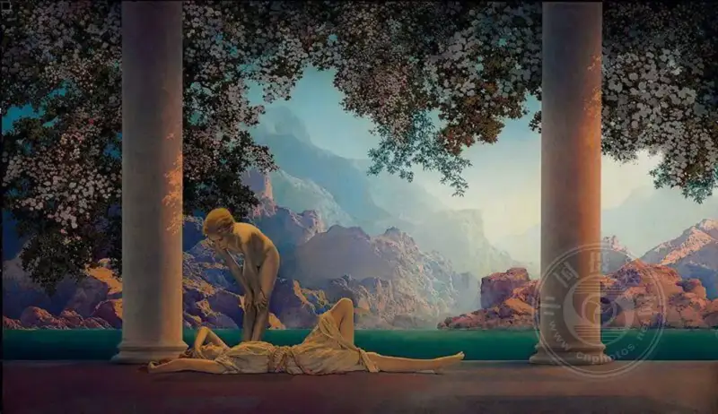
▲ Dawn ©Maxfield Parrish
You do not need a full rectangular frame. A partial frame gives the same effect. A rocky cliff can frame a misty sea, and a shaded forest can set off a snow mountain.
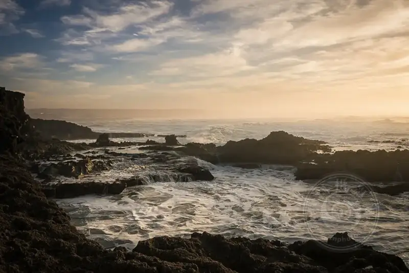
▲ Before Sunset ©aminefassi
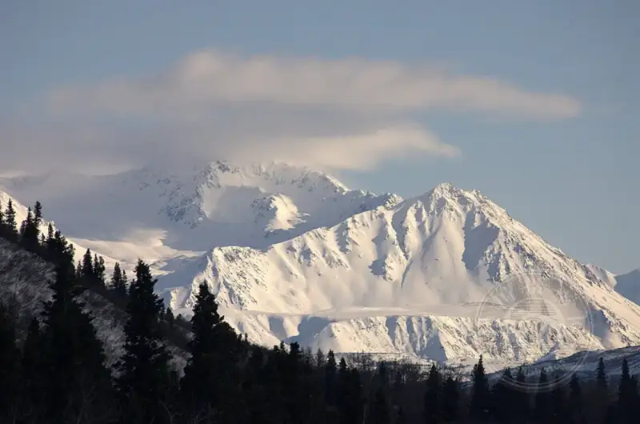
▲ Hope ©Rebecca
3. Find diagonals, horizontals, and verticals
Framing and the rule of thirds are two reliable methods, but they are not the only ones. Back to the idea of lines in landscape photography: you can use diagonals, horizontals, or verticals. For example, a set of tracks can split a meadow vertically and add beauty to an ordinary scene.
You can also use layered lines. For example, layer the sunrise, mountains, mist, trees, and grass horizontally. Of course, this needs you to first find such a scene and keep the idea of lines in mind.
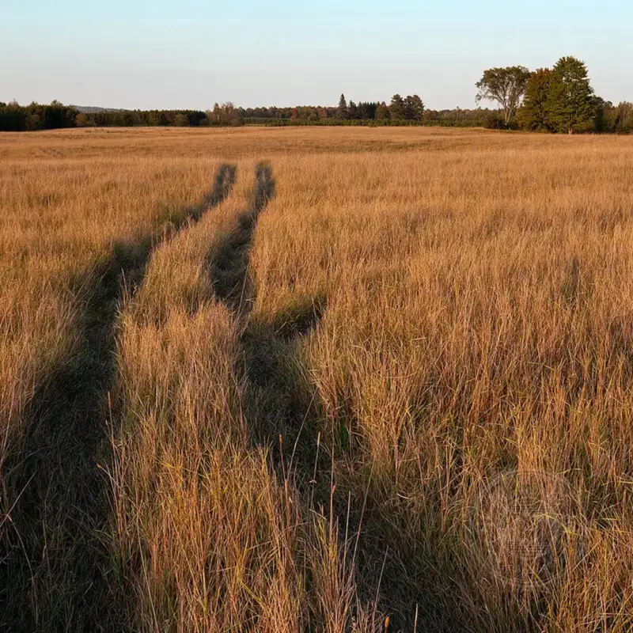
▲ Untitled ©R Casey
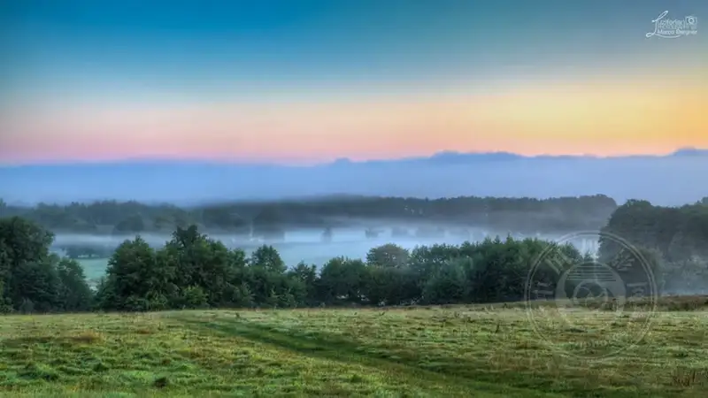
▲ Sea of Fog ©Marco Bergner
Lighting in landscape photography
Landscape lighting depends entirely on time. Unlike portrait work, you cannot control the light on site, so you must do some research, capture the scene at the right time, and rely on a little luck with the weather.
1. Time your photos with sunrise and sunset: the golden hour
In most scenes, sunrise and sunset produce the best images. This is not always true, and it varies by scene. But the soft, warm light at sunrise and sunset adds a magical glow to your photos and shows incredible color in the sky.
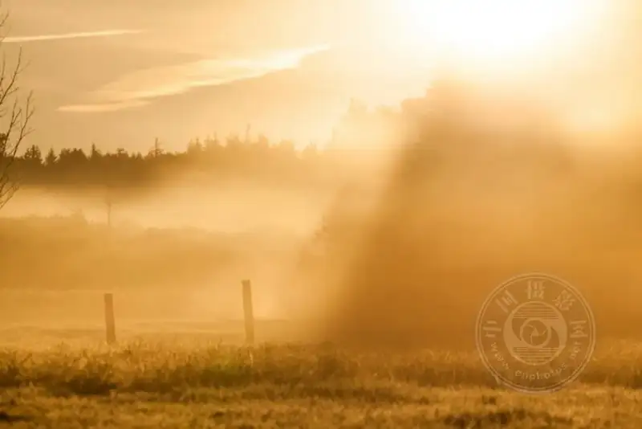
▲ Sunday Morning Fog ©Marco Bergner
2. Plan shoot time around the crowds
Beautiful scenery usually draws many photographers. Try to schedule your shoot when there are few people, or ideally no one.
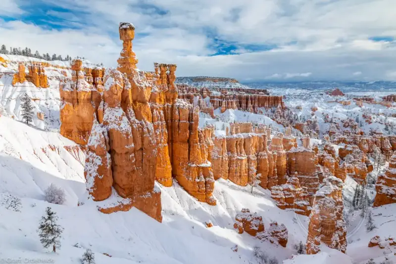
Editing landscape photos
Landscape editing differs from portrait editing. You usually do not worry about skin tones, which frees you to explore more ideas. When it comes to shifting color or adding contrast, you can even try more extreme options. Below are two landscape photos with different post-production styles.
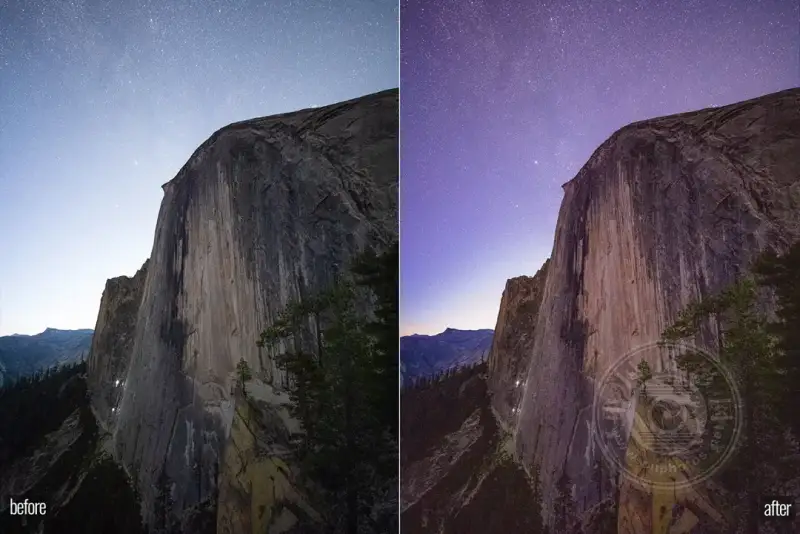
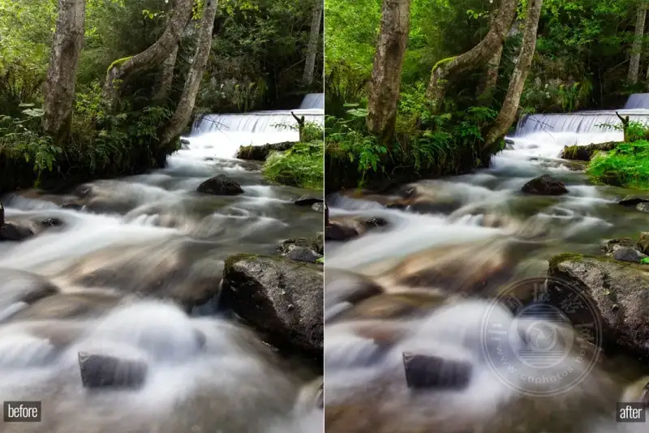
Landscape photography is a unique type that lets you blend your love and appreciation of nature and photography. Over time, improving your skills helps you create better photos. Whether you are new or experienced, I hope this article helps or inspires you.